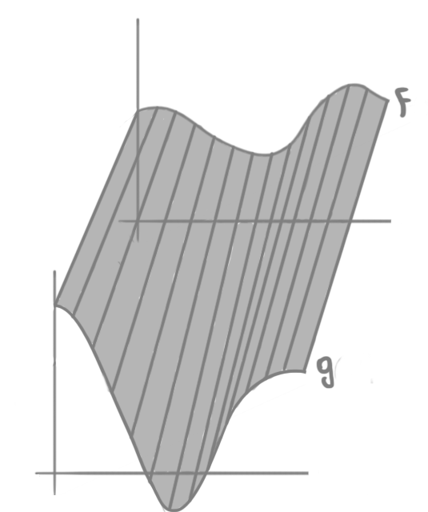

Homotopia e Extensões Contínuas
Aplicações Homotópicas
Sejam $X, Y$ espaços topológicos e $f,g \colon X \to Y$ duas aplicações contínuas. Dizemos que $f$ e $g$ são homotópicas ou homotopicamente equivalentes se, e somente se, existe outra aplicação contínua $H \colon X \times [0,1] \to Y$ tal que $H(x,0) = f(x)$ e $H(x,1) = g(x)$ para todo $x$. Nesse caso, escrevemos $f \simeq g$ e chamamos $H$ de uma homotopia entre $f$ e $g$.
Exemplo 01: se $E$ é um espaço vetorial normado e $f,g \colon X \to E$ são duas aplicações contínuas, então $f$ e $g$ são homotópicas: podemos considerar a homotopia $H(x,t) = (1-t)f(x) + tg(x)$. Esse tipo de homotopia é chamada de homotopia linear.
Homotopia entre duas funções $f,g \colon \mathbb{R} \to \mathbb{R}$.
Observação 02: a relação de homotopia depende do contradomínio. Por exemplo, duas aplicações $f,g \colon X \to E \setminus \{0\}$ podem não ser homotópicas. Em particular, se dado $x_0 \in X$, $E = \mathbb{R}^2$ e $f(x_0)$ e $g(x_0)$ forem opostos pela origem, então a homotopia linear é impossível, pois teríamos $H(x_0,1/2) = 0$.
Exemplo citado na observação.
Exemplo 03: se representarmos por $\mathbb{S}^n$ a esfera $n-$dimensional (note que $\mathbb{S}^n \subset \mathbb{R}^{n+1}$), dadas $f,g \colon X \to \mathbb{S}^n$ não antipodais, ou seja, tais que $f(x) \neq -g(x)$ para todo $x \in X$, então $f \simeq g$ pela aplicação $H \colon X \times [0,1] \to \mathbb{S}^n$ dada por: $$H(x,t) = \frac{(1-t)f(x) + tg(x)}{\mid (1-t)f(x) + tg(x) \mid}.$$ A intuição por trás dessa homotopia é a seguinte: dado $x_0 \in X$, $G_{x_0}(t) = (1-t)f(x_0) + tg(x_0)$ é o segmento de reta que liga os pontos $f(x_0)$ e $g(x_0)$. Dividir por $\mid G_{x_0}(t) \mid$ é a mesma coisa que projetar esse segmento na esfera, pois $H(x_0, t)$ acaba tendo norma $1$ para todo $t$.
Projeção do ponto $a$ do segmento que liga $f(x_0)$ em $g(x_0)$ na esfera de $1-$dimensão.
Exemplo 04: agora, vamos olhar dois casos particulares do exemplo anterior:
- se $f(x) \neq x$ para todo $x \in X$, então podemos escolher $g(x) = -x$ e assim teremos que $f \simeq g = -Id_X$;
- se $f(x) \neq -x$ para todo $x \in X$, então podemos escolher $g(x) = x$ e assim teremos que $f \simeq g = Id_X$;
Exemplo 05: ao longo do curso, veremos que a aplicação antipodal $\alpha \colon \mathbb{S}^n \to \mathbb{S}^n$ dada por $\alpha(x) = -x$ é homotópica à identidade se, e somente se, $n$ é ímpar.
Homotopias e Relações de Equivalência
Proposição 06: a relação $\simeq$ é uma relação de equivalência:
Demonstração:
- Reflexiva: considere a homotopia $H(x,t) = f(x)$. Se o objetivo é transformar uma coisa nela mesma, podemos simplesmente não fazer nada;
- Simétrica: se $H(x,t)$ é homotopia de $f$ a $g$, então $K(x,t) = H(x,1-t)$ é homotopia de $g$ a $f$. A intuição aqui é que estamos utilizando a mesma transformação, mas ao contrário;
- Transitiva: se $H(x,t)$ é homotopia de $f$ a $g$ e $K(x,t)$ é homotopia de $g$ a $h$, então: $$L(x,t) = \left\{ \begin{array}{ll} H(x,2t) & \mbox{se } 0 \leq t \leq 1/2 \\ K(x,2t-1) & \mbox{se } 1/2 \leq t \leq 1 \end{array} \right.$$ Aqui a ideia é que estamos utilizando metade do tempo para transformar $f$ em $g$ e a outra metade para transformar $g$ em $h$. Como para $t = 1/2$ ambas as partes da definição coincidem, a homotopia é contínua. $\blacksquare$
Ser homotopicamente equivalente é uma relação de equivalência.
Perceba que na imagem acima, para facilitar a vida do desenhista (eu mesmo), representamos a homotopia para um ponto $x_0 \in X$ fixado, não para todo o domínio $X$ de $f$ e $g$.
Proposição 07: se $f, f' \colon X \to Y$ são homotópicas e $g, g' \colon Y \to Z$ também são, então $g \circ f, g' \circ f' \colon X \to Z$ são homotópicas.
Demonstração: sejam $H, K$ homotopias entre $f, f'$ e $g,g'$, respectivamente. A função $J \colon X \times [0,1] \to Z$ dada por $J(x,t) = K(H(x,t),t)$ é uma homotopia de $g \circ f$ para $g' \circ f'$. Como $K$ e $H$ são contínuas, $J$ é contínua e além disso temos $J(x,0) = K(H(x,0),0) = K(f(x),0) = g(f(x))$ e $J(x,1) = K(H(x,1),1) = K(f'(x),1) = g'(f'(x))$. Assim, $J$ é de fato uma homotopia entre as duas funções. $\blacksquare$
Dada $f \colon X \to Y$ contínua, definimos a classe de homotopia $[f]$ de $f$ como sendo o conjunto $\{g \colon f \simeq g\}$. A proposição acima apenas garante que a operação $[g] \circ [f] = [g \circ f]$ está bem definida.
Tipo de Homotopia
Dizemos que $f \colon X \to Y$ contínua é uma equivalência homotópica se existe $g \colon Y \to X$ também contínua tal que $g \circ f \simeq Id_X$ e $f \circ g \simeq Id_Y$. Dizemos que $g$ é a inversa homotópica de $f$. Diremos que $X$ e $Y$ tem o mesmo tipo de homotopia.
Exemplo 08: todo homeomorfismo é equivalência homotópica.
Exemplo 09: todo espaço vetorial normado tem o tipo de homotopia de um ponto, pois dado um EVN $E$, note que $f \colon E \to \{0\}$ dada por $f(v) = 0$ para todo $v \in E$ é contínua, pois é constante. Ainda mais, se $i \colon \{0\} \to E$ é a inclusão, note que $f \circ i \simeq Id_{\{0\}}$ () e $i \circ f \simeq Id_E$ (quaisquer duas funções contínuas com contra-domínio num EVN são homotópicas).
Exemplo 10: considere a inclusão $i \colon \mathbb{S}^n \to \mathbb{R}^{n+1}\setminus\{0\}$ e a função $r \colon \mathbb{R}^{n+1}\setminus\{0\} \to \mathbb{S}^n$ dada por $r(x) = x/|x|$. Primeiro, note que ambas $i$ e $r$ são contínuas. Agora, claramente $r \circ i = Id_{\mathbb{S}^n}$ e, além disso, pela homotopia linear segue também que $i \circ r \simeq Id_{\mathbb{R}^{n+1}}$. Assim, $\mathbb{R}^{n+1}\setminus\{0\}$ e $\mathbb{S}^n$ tem o mesmo tipo de homotopia. A ideia aqui é que para cada $x \in \mathbb{R}^{n+1}$ podemos percorrer o a reta que liga $x$ em $0$ até chegarmos em $\mathbb{S}^n$ (o que não aconteceria no caso de incluirmos o $0$ pois essa reta não estaria bem definida).
Visualização de como funcionam as funções $i$ e $r$.
Note que homotopia é um conceito muito mais fraco que homeomorfismo entre espaços topológicos. Por exemplo, como $\mathbb{R}^{n+1}$ é um EVN, temos que $\mathbb{S}^n$ tem o tipo de homotopia de um ponto. Porém, perceba que $\mathbb{S}^n$ separa o espaço em dois subespaços desconexos, enquanto um ponto não faz isso.
Homotopia de Pares
Um par de espaços topológicos é uma dupla $(X,A)$ onde $A$ é subespaço de $X$. Uma aplicação contínua de pares $f \colon (X,A) \to (Y,B)$ é uma função $f \colon X \to Y$ contínua tal que $f(A) \subset B$.
Uma homotopia de pares entre duas aplicações contínuas $f,g \colon (X,A) \to (Y,B)$ é uma aplicação contínua $H \colon (X \times [0,1], A \times [0,1]) \to (Y,B)$ tal que $H(x,0) = f(x)$. Note que por definição temos $H(x,1) = g(x)$ e $H(A \times [0,1]) \subset B$.
Exemplo 11: considere $J = [-1,1]$ com $\partial J = \{-1,1\}$. Temos as aplicações $Id_J$ e $-Id_J$, homotópicas pela homotopia linear $H(x,t) = (1-2t)x$. Porém, as aplicações $Id_{(J, \partial J)}$ e $-Id_{(J, \partial J)}$ não são, pois uma homotopia de pares $H$ teria que satisfazer $H(1,t) \in \partial J$ para todo$t \in [0,1]$, porém, como $H$ é contínua isso implicaria que a aplicação $t \mapsto H(1,t)$ fosse constante, o que é um absurdo pois $H(1,0) = 1$ e $H(1,1) = -1$.
Duas aplicações contínuas $f,g \colon X \to Y$ são homotópicas relativamente a um subespaço $A \subset X$ se, e somente se, existe uma homotopia $H \colon X \times [0,1] \to Y$ entre $f$ e $g$ tal que $H(x,t) = f(x) = g(x)$ para todo $t \in [0,1]$ e para todo $x \in A$.
Exemplo 12: as funções $Id_{\mathbb{R}^{n+1}}$ e $r$ do Exemplo 10 são homotópicas relativamente ao subconjunto $\mathbb{S}^n$, pois quando restritas a este, ambas se tornam a identidade $Id_{\mathbb{S}^n}$ e, além disso, a homotopia $H(x,t) = (1-t)x + tr(x)$ é tal que se $x_0 \in \mathbb{S}^n$, $r(x_0) = x_0$ e assim $H(x_0,t)$ $= (1-t)x_0 + tx_0$ $= x_0$ $= r(x_0)$ $= Id_{\mathbb{R}^{n+1}}(x_0)$.
Espaços Contráteis
Um espaço topológico $X$ diz-se contrátil se, e somente se, tem o tipo de homotopia de um ponto (conjunto unitário).
Proposição 13: $X$ é contrátil se, e somente se, $Id_X$ é homotópica a uma aplicação constante $X \to X$.
Demonstração: se $X$ é contrátil então existe uma equivalência homotópica $f \colon X \to \{p\}$. Perceba que $f$ obrigatoriamente é a função $p$ (constante igual a $p$). Agora, se denotarmos por $g \colon \{p\} \to X$ sua inversa homotópica, teremos $(g \circ f)(x) = g(p)$ para todo $x \in X$, portanto $g\circ f$ é constante e por definição de inversa homotópica temos $g \circ f \simeq Id_X$. Agora, se $Id_X \simeq p$, então $Id_X \simeq p \circ Id_X$ e $Id_X \circ p \simeq Id_X$. $\blacksquare$
Exemplo 14: um subconjunto $X$ de um EVN $E$ é uma estrela de vértice $p$ se contém o segmento de reta $[p,x] = \{y \colon \exists t \in [0,1]$ tal que $y = (1-t)p + tx\}$, $(t \in [0,1])$ para todo $x \in X$. Bom, note que $H(x,t) = (1-t)p + tx$ é uma homotopia entre a função constante $x \mapsto p$ e a identidade em $X$, portanto $X$ é contrátil.
Exemplo de estrela. Nesse caso, qualquer ponto dentro da área rachurada pode ser um vértice.
Observação 15: todo espaço contrátil é também conexo por caminhos. Afinal, fixado $p \in X$ com $Id_X \simeq K_p$, dados $x,y \in X$ temos os caminhos $f_x(t) = H(x,t)$ e $f_y(t) = H(y,1-t)$ onde $H$ é a homotopia entre $Id_X$ e $p$. Basta notar que a função $f$ descrita abaixo é um caminho de $x$ para $y$: $$f(t) = \left\{ \begin{array}{ll} f_x(2t) & \mbox{se } 0 \leq t \leq 1/2 \\ f_y(2t-1) & \mbox{se } 1/2 \leq t \leq 1 \end{array} \right.$$
Proposição 16: se algum dos espaços $X$ ou $Y$ é contrátil, então toda aplicação contínua $f \colon X \to Y$ é homotópica a uma constante.
Demonstração: dada $f \colon X \to Y$ aplicação contínua, se $X$ for contrátil, então sabemos que $Id_X \simeq p$. Agora, podemos "compor dos dois lados" (pois $f \simeq f$ e pela Proposição 07) e assim temos $f \circ Id_X \simeq f \circ p$ e portanto $f \simeq f \circ p$. Basta notar que $f \circ p \colon X \to Y$ é a função $(f \circ p)(x) = f(p)$, que é constante, assim $f \simeq f(p)$. No caso de $Y$ ser contrátil, seja $H \colon Y \times [0,1] \to Y$ a homotopia entre $Id_Y$ e $q$. Temos que a aplicação $L \colon X \times [0,1] \to Y$ dada por $L(x,t) = K(f(x), t)$ é uma homotopia entre $f$ e $q$. $\blacksquare$
Corolário 17: se $Y$ é contrátil, então quaisquer duas aplicações contínuas $f,g \colon X \to Y$ são homotópicas.
Demonstração: como $Y$ é contrátil, sabemos que $f \simeq q$ e $g \simeq q$. Assim, por ambas as propriedades simétrica e transitiva da Proposição 06, temos que $f \simeq g$ (note que a demonstração funciona pois ambas as funções são homotópicas à mesma constante). $\blacksquare$
Corolário 18: se $X$ é contrátil e $Y$ é conexo por caminhos, então quaisquer duas aplicações contínuas $f,g \colon X \to Y$ são homotópicas.
Demonstração: a demonstração é similar à anterior, porém, nesse caso sabemos que $f \simeq f(p)$ e que $g \simeq g(p)$. Como estas duas constantes podem ser diferentes, precisamos que $Y$ seja um espaço que faça $f(p) \simeq g(p)$. A condição que utilizamos aqui é que $Y$ seja conexo por caminhos (tome $f \colon [0,1] \to Y$ caminho que conecta $f(p)$ em $g(p)$, temos que $H(x,t) = f(t)$ também as conecta). $\blacksquare$
Árvores
Para definirmos a ideia de grafo, comecemos com um conjunto discreto de pontos $G^0$, chamaremos esses pontos de vértices. Agora, defina um conjunto $G^1$ onde todos os objetos são espaços $J_i$ homeomorfos ao intervalo $[0,1]$. Esses espaços serão chamados de arestas. Para cada aresta $J_i$, sabemos que $\partial J_i$ é um conjunto com dois elementos, que chamaremos de $u_i$ e $v_i$ (vamos padronizar que o homeomorfismo de $J_i$ em $[0,1]$ leva $u_i$ em $0$ e $v_i$ em $1$). Um grafo é um conjunto $G = G^0 \sqcup G^1 / \sim$, onde $\sim$ é a relação de equivalência que identifica todos os pontos $u_i$ e $v_i$ com elementos de $G^0$ (distintos ou não). A topologia em $G$ é aquela na qual $A \subset G$ é aberto se, e somente se, $A \cap J_i$ é aberto em $J_i$ para todo $i$. Um subgrafo de $G$ é um grafo composo de arestas e vértices de $G$.
Exemplos de um grafo $G$, um subgrafo de $G$ e de um grafo conexo gerado por $G$.
Um grafo $G$ é conexo se quaisquer dois vértices são ligados por uma quantidade finita de arestas (ou seja, dados $g,h$ vértices, existem $J_1, \dots, J_n$ distintas tais que $g \sim u_1$ e $h \sim v_n$ e, além disso, $v_i \sim u_{i+1}$ para todo $i < n$). Um circuito em $G$ é uma sequência finita de arestas distintas $J_1, \dots, J_n$ tal que $v_i \sim u_{i+1}$ para todo $i < n$ e $v_n \sim u_1$.
Exemplos de circuitos de $G$, de uma árvore e da remoção de uma aresta aberta, tornando a árvore desconexa.
Uma árvore $A$ é um grafo conexo que não ter circuitos. Dada $J$ uma aresta qualquer, chamamos de $J \setminus \partial J$ de aresta aberta. Dizemos também que um vértice $g \in G$ é livre se ele está ligado a uma única aresta.
Lema 19: remover uma aresta aberta de uma árvore a torna desconexa.
Demonstração: suponha que não, ou seja, tome $g, h$ vértices de $G$ uma árvore e a aresta $J_1$ que liga ambos. Se $G$ continua conexo após a remoção de $J_1$ aberta, então existem $J_2, \dots, J_n$ arestas que ligam $g$ e $h$. Basta notar que isso faz com que $J_1, J_2, \dots, J_n$ formem um ciclo, o que é um absurdo pois árvores não possuem ciclos. $\blacksquare$
Lema 20: toda árvore finita possui um vértice livre.
Demonstração: uma árvore de apenas uma aresta possui dois vértices livres, que são os seus únicos vértices. Se supusermos que toda árvore de $n-1$ arestas possui um vértice livre, como todo subgrafo de uma árvore é também uma árvore, toda árvore de $n$ arestas é construida adicionando uma aresta a uma árvore de $n-1$ vértices. Agora, dada uma árvore de $n-1$ vértices, podemos adicionar uma aresta a ela conectando-a de duas maneiras: se conectarmos apenas um vértice, o outro vértice dessa aresta será livre. Se conectarmos ambos os vértices $u, v$ dessa nova aresta em vértices $g,h$ já existentes na árvore, então o novo vértice junto com o caminho de $g$ para $h$ forma um ciclo, portanto o nosso novo grafo não é uma árvore. $\blacksquare$
Teorema 21: toda árvore finita é contrátil.
Demonstração: dada uma árvore finita $G$ com uma aresta, podemos contrair esta aresta para algum de seus vértices e assim $G$ é contrátil. Assuma que toda árvore com $n-1$ arestas é contrátil. Dada uma árvore $G$ com $n$ arestas, como $G$ possui um vértice livre $g$, podemos contrair a aresta de $g$ para o seu outro vértice, ficando assim com uma subarvore de $G$ (um subgrafo que também é uma árvore) que tem $n-1$ arestas. Por hipótese de indução, esta é contrátil. $\blacksquare$
Teorema 22: toda árvore enumerável é contrátil.
Demonstração: a demonstração desse teorema requer dois fatos principais: todo grafo enumerável mergulha em $\mathbb{R}^3$ e circuitos não são contráteis. Para provarmos a primeira, basta notar que a curva que é imagem do mapa $x \mapsto (1, x, x^2)$ tem a propriedade de que dados quaisquer três pontos nela, estes três pontos não são colineares. A demonstração disso se baseia no fato de que esses pontos seriam colineares se, e somente se, o determinante da matriz de suas coordenadas fosse $0$, o que não acontece pois este determinante é o determinante da matriz de Vandermonde, que é diferente de $0$. Agora, se $\{v_i\}_{i \in \mathbb{Z}_{\geq 0}}$ é uma enumeração para os vértices do nosso grafo, podemos identificar $v_i$ com o ponto $(1, i, i^2)$ e as arestas serão os segmentos de reta ligando esses pontos.
O segundo fato é bem mais fácil: basta notar que todo circuito é homotópico a uma aresta com ambas as suas extremidades conectadas no mesmo vértice (pois podemos contrair todas as outras arestas do circuito) e que essa aresta é claramente homotópica a um círculo, que não é contrátil. Agora que já sabemos disso, basta que dada uma árvore $G$, mergulhemos $G$ em $\mathbb{R}^3$. A lei que descreve o segmento que liga $v_i$ em $v_j$ é $f_{i \to j}(t) = (1-t)v_i + tv_j$. Agora, conforme o tempo passa podemos arrastar $v_j$ até $v_i$ por $f_{i \to j}$. Note que a parte chave aqui é que podemos fazer isso com todas as arestas de uma vez (já que não há circuitos em $G$), portanto $G$ é contrátil. $\blacksquare$
Retrações
Dado um espaço $X$ e $Y \subset X$, uma aplicação contínua $r \colon X \to Y$ é chamada de retração se $r(y) = y$ para todo $y \in Y$. Ou seja, $r$ é uma extensão contínua da aplicação identidade $Id_Y$. Se existe uma retração $r \colon X \to Y$, dizemos que $Y$ é um retrato de $X$.
Exemplo 23: a função $r$ dada no Exemplo 10 é uma retração.
Dados $Y, V \subset \mathbb{R}^n$ com $V$ vizinhança de $Y$, dizemos que $Y$ é retrato de $V$ em $\mathbb{R}^n$, se existir uma retração $r \colon V \to Y$.
Exemplo 24: como vimos no Exemplo 23, $\mathbb{S}^n$ é retrato de $\mathbb{R}^{n+1}\setminus\{0\}$ em $\mathbb{R}^{n+1}$.
Proposição 25: dados $Y,V \subset \mathbb{R}^n$ com $V$ vizinhança de $Y$ e $Y$ compacto, se $Y$ é retrato de $V$ em $\mathbb{R}^n$, então existe $\varepsilon > 0$ tal que dadas $f, g \colon X \to Y$ aplicações contínuas, se $d(f(x), g(x)) < \varepsilon$ para todo $x \in X$ com $X$ espaço topológico qualquer, então $f \simeq g$.
Demonstração: bom, vamos supor que existe tal $\varepsilon > 0$ e trabalhar um pouco com nossa intuição, para que consigamos construi-lo de maneira esperta. Bom, sabemos que $f(x), g(x) \in Y$ para qualquer $x \in X$ e, além disso, se o objetivo é mostrar que $f \simeq g$, talvez adaptar a homotopia linear seja interessante (já que $\mathbb{R}^n$ é EVN). Bom, aqui temos um problema, pois não há como garantir que o segmento ligando $f(x)$ e $g(x)$ esteja inteiramente em $X$. Resolver isso parece complicado, mas se lembrarmos que $Y$ é retrato de $V$ em $\mathbb{R}^n$, percebemos que basta garantir que esse segmento esteja dentro dessa vizinhança! Bom, isso é fácil, pois basta escolher um $\varepsilon$ que faça com que $B(y, \varepsilon) \subset V$ para qualquer $y \in Y$ (afinal, $g(x) \in B(f(x), \varepsilon)$ e portanto o segmento que liga ambos os pontos estaria automaticamente dentro de $V$).
Bom, sabemos que a distância de $Y$ até $\mathbb{R}^n \setminus V$ é positiva, pois a função $y \mapsto d(y, \mathbb{R}^n\setminus V)$ é contínua e como $Y$ é compacto, a função possui mínimo, que é positivo pois a função é positiva para todo $y$ (já que $y \not\in \mathbb{R}^n \setminus V$). Bom, basta que esse seja nosso $\varepsilon$! Escolha $\varepsilon = \min\{d(x,F) \colon x \in Y\} > 0$ e assim teremos que pra todo $y \in Y$, se $b \in B(y, \varepsilon)$ então $d(b,y) < \varepsilon$ e portanto $b \in V$. $\blacksquare$
Extensão de Aplicações
Dada $f \colon A \to Y$ uma aplicação contínua, onde $A \subset X$, uma extensão contínua é uma aplicação contínua $F \colon X \to Y$ tal que $F(x) = f(x)$ se $x \in A$. O problema que queremos estudar é: quando que uma aplicação admite extensão contínua? O teorema de Tietze-Urysohn afirma que se $A$ é fechado, $X$ é normal e $Y = \mathbb{R}^n$, então essa extensão existe.
Proposição 26: uma aplicação contínua $f \colon \mathbb{S}^n \to Y$ possui extensão contínua $F \colon \mathbb{B}^{n+1} \to Y$ se, e somente se, esta é homotópica a uma constante.
Demonstração: primeiramente, vamos definir a aplicação contínua $\phi$ que "conifica" o cilindro $\mathbb{S}^n \times [0,1]$, ou seja, $\phi \colon \mathbb{S}^n \times [0,1] \to \mathbb{B}^{n+1}$ dada por $\phi(x,t) = (1-t)x$. Note que $\phi$ é injetiva em $\mathbb{S}^n \times [0,1)$, sobrejetora e contínua. Agora, perceba que o mapa $$\phi' \colon \frac{\mathbb{S}^n \times [0,1]}{\mathbb{S}^n \times \{1\}} \to \mathbb{B}^{n+1}$$ dado por $\phi'(x,t) = (1-t)x$ é bijetor, pois é igual ao mapa $\phi$ em $\mathbb{S}^n \times [0,1)$ e todo o conjunto que impedia $\phi$ de ser injetor agora está colapsado a um único ponto. Além disso, o único ponto que impede $\phi$ restrito à $\mathbb{S}^n \times [0,1)$ de ser sobrejetora é o $0$, que é a imagem do agora colapsado $\mathbb{S}^n \times \{1\}$.
Pela propriedade universal do quociente, segue que $\phi'$ é contínuo, pois $\phi = \phi' \circ \pi$, onde $\pi$ é o mapa projeção $\pi \colon \mathbb{S}^{n} \times [0,1] \to \frac{\mathbb{S}^n \times [0,1]}{\mathbb{S}^n \times \{1\}}$. Agora, como o domínio de $\phi'$ é compacto, segue que $\phi'$ é um homeomorfismo. Para realizarmos a demonstração da proposição, vamos fazer a ida e a volta separadamente:
- Ida: se $f$ admite extensão contínua $F$, então podemos definir a homotopia $H \colon \mathbb{S}^n \times [0,1] \to Y$ dada por $H = F \circ \phi$. Note que $H(x,0)$ $= F(\phi(x,0))$ $= F(x)$ $= f(x)$ (pois $x \in \mathbb{S}^n$) e $H(x,1) = F(\phi(x,1)) = F(0)$, portanto temos que $f$ é homotópica a uma constante ($f \simeq F(0)$).
- Volta: tome a aplicação $F = H \circ \phi'^{-1} \colon \mathbb{B}^{n+1} \to Y$ e perceba que se $a \in \mathbb{S}^n$, temos $F(a) = H(\phi'^{-1}(a)) = H(a,0) = f(a)$. $\blacksquare$
Proposição 27: dados $Y, V \subset \mathbb{R}^n$ com $V$ vizinhança de $Y$ e $Y$ retrato de vizinhança de $V$ em $\mathbb{R}^n$. Sejam também $X$ um espaço normal e $A \subset X$ fechado. Temos que toda aplicação contínua $f \colon A \to Y$ possui extensão contínua para alguma vizinhança de $A$.
Demonstração: primeiramente, perceba que podemos tomar o contra-domínio de $f$ como sendo todo o $\mathbb{R}^n$, sem perder nenhuma informação. Isso é importante pois agora temos que $f$ se enquadra nos requisitos para aplicarmos o teorema de Tietze-Urysohn! Fazendo isso, conseguimos uma extensão contínua $\phi \colon X \to \mathbb{R}^n$ de $f$. Agora, se $U = \phi^{-1}(V)$, perceba que $U$ é uma vizinhança de $A$ (pois $A \subset \phi^{-1}(Y) \subset \phi^{-1}(V)$). Por fim basta notar que $F = r \circ \phi_U \colon U \to Y$, onde $r$ é a retração de $V$ em $Y$, é contínua (composição de funções contínuas) e se $x \in A$, então $F(x)$ $= r(\phi_U(a))$ $= r(f(a))$ $= f(a)$ (note que aqui denotamos por $\phi_U$ a restrição de $\phi$ ao conjunto $U$).
Teorema da Extensão de Borsuk
Agora, provaremos um resultado que de certa maneira implica o teorema de Tietze-Urysohn (de certa maneira, pois precisamos supor algo que não é necessário no teorema descrito). Esse resultado, chamado de Teorema da Extensão de Borsuk, diz que a propriedade de admitir extensão contínua depende apenas da classe de homotopia da aplicação.
Teorema 28: sejam $Y, V \subset \mathbb{R}^n$ com $V$ vizinhança de $Y$ e $Y$ retrato de vizinhança de $V$ em $\mathbb{R}^n$. Sejam também $X$ um espaço métrico e $A \subset X$ fechado. Dadas $f,g \colon A \to Y$ aplicações contínuas homotópicas, se $F \colon X \to Y$ é uma extensão contínua de $f$, temos que toda homotopia entre $f$ e $g$ se estende para uma homotopia entre $F$ e uma extensão contínua de $g$.
Demonstração: seja $H \colon A \times [0,1] \to Y$ uma homotopia entre $f$ e $g$. Definiremos a extensão de $H$ primeiramente no conjunto $X \times \{0\}$: $$H_0 \colon (X \times \{0\}) \cup (A \times [0,1]) \to Y, \quad H_0(x,t) = \left\{ \begin{array}{ll} F(x) & \mbox{se } x \in X \mbox{ e } t = 0 \\ H(x,t) & \mbox{se } (x,t) \in A \times [0,1] \end{array} \right.$$ Pela Proposição 27, $H_0$ se extende continuamente para uma vizinhança $W$ do seu domínio (note que $X \times [0,1]$ é métrico, portanto normal. Além disso, como $A$ e $\{0\}$ são fechados em seus respectivos espaços, o domínio de $H_0$ é também fechado). Agora, como $[0,1]$ é compacto, existe $U$ vizinhança de $A$ tal que $U \times [0,1] \subset W$ (basta notar que a aplicação com domínio $[0,1]$ dada por $t \mapsto d(A \times \{t\}, X \times [0,1] \setminus W)$ é contínua).
Pelo lema de Urysohn, como $A$ e $X \setminus U$ são fechados e $X$ é normal, então existe uma aplicação $\lambda \colon X \to [0,1]$ que satisfaz: $$\lambda(x) = \left\{ \begin{array}{ll} 0 & \mbox{se } x \in A \\ 1 & \mbox{se } x \in X \setminus U \end{array}\right.$$ Defina, portanto, $G \colon X \times [0,1] \to Y$ por $G(x,t) = H_0(x, \lambda(x)t)$. Temos que $G(a,t) = H_0(a, \lambda(a)t)$ $= H_0(a,t)$ $= H(a,t)$ para todo $a \in A$. Além disso, $G(x,0)$ $= H_0(x, \lambda(x)0)$ $= H_0(x,0)$ $= F(x)$ e ainda $G(x,1)$ $= H_0(x, \lambda(x))$ e se $x \in A$ temos $G(x,1)$ $= H_0(x,1)$ $= H(a,1)$ $= g(x)$ e assim $G(x,1)$ é extensão contínua de $g$.
Ilustração do Teorema 28.
Corolário 29: se $Y \subset \mathbb{R}^n$ é retrato de vizinhança de uma vizinhança $V$ em $\mathbb{R}^n$ e contrátil, e $A$ é subconjunto fechado de um espaço métrico $X$, toda aplicação contínua $f \colon A \to Y$ admite extensão contínua $F \colon X \to Y$.
Demonstração: se $Y$ é contrátil, quaisquer $f, g \colon A \to Y$ são homotópicas (Corolário 17) e portanto podemos tomar $g$ constante. Como $g$ admite extensão contínua, $f$ também admite pelo Teorema 28.
Corolário 30: se $Y \subset \mathbb{R}^n$ é retrato de vizinhança de uma vizinhança $V$ em $\mathbb{R}^n$, conexo por caminhos, e $A$ é subconjunto fechado contrátil de um espaço métrico $X$, toda aplicação contínua $f \colon A \to Y$ admite extensão contínua $F \colon X \to Y$.
Demonstração: agora pelo Corolário 18, como $Y \subset \mathbb{R}^n$ é conexo por caminhos temos que $f$ é homotópico a qualquer mapa constante, que possui extensão contínua, portanto o Teorema 28 nos diz que $f$ também possui.
Corolário 31: se $Y \subset \mathbb{R}^n$ é retrato de vizinhança de uma vizinhança $V$ em $\mathbb{R}^n$ e $A$ é subconjunto fechado de um espaço métrico contrátil $X$, uma aplicação contínua $f \colon A \to Y$ admite extensão contínua se, e somente se, for homotópica a uma constante.
Demonstração: se $f$ for homotópica a uma constante o resultado segue do Teorema 28. Se $f$ possuir extensão contínua $F \colon X \to Y$, como $X$ é contrátil então $F$ é homotópica a uma constante e assim $f$ também será (basta restringir a homotopia).